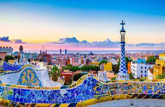

Mexico City, Mexico


Geographical Location: North America
Mexico City is the capital of Mexico. The city is full of Museums that vary from history, art, and even the history of the Mexican coin. In 2020 the Mexico city total population. was about 9.2 million The city is 571 miles squared
For tourists, there are places like an amusement park called Feria de Chapultepec and giant zoo Zoológico de Chapultepec that are a must visit. In the photo gallery there are also major attractions to visit.
Photo Gallery

Castillo de Chapultepec (Chapultepec Castle) is a castle that is located in Miguel Hidalgo, Mexico City.
Angel de la independencia (Angel of Independence) is an important monument located in Cuauhtémoc, Mexico City.

Templo Mayor (Mayor Temple) is a museum that is built by the ruins of an ancient temple.

This is the tomb of Margarita Maza de Juarez who was the wife of Benito Juarez (A historical president).

Estadio Azteca is the stadium where the national Mexican soccer team plays and the team Club América.
Ari Atoll, Maldives


Geographical Location: Asia
Maldives is an archipelagic state and country in South Asia, situated in the Indian Ocean. It lies southwest of Sri Lanka and India, about 750 kilometres (470 miles; 400 nautical miles) from the Asian continent's mainland. The Maldives' chain of 26 atolls stretches across the equator from Ihavandhippolhu Atoll in the north to Addu Atoll in the south.
Maldives offers such an incredible combination of dazzling beaches, cerulean waters and fantastic diving that its opening up to travelers without limitless financial resources is definitely a cause for celebration.
Photo Gallery


Nanjing Fuzi-Qinhuai


Nanjing is a popular city full of Chinese history and old traditional southern kinds of agriculture. As a northern people from China, Nanjing was the first city that I traveled to the region south of the Yangtze River. Confucius Temple - Qinhuai River is the most famous place to show the beauty of Nanjing.
Confucius temple has many traditional temple agricultures inside and many small shops about traditional Nanjing specialties and popular restaurants. There are also many colorful traditional lanterns which made the night of qinhuai more gorgeous. People can also take the “Hua Fang” ( a special kind of ship) to travel around the river and the whole scenery.
Photo Gallery


Yellowstone


Geographical Location: North America
Yellowstone is the first national park in the United States. It covers over 2.2 million acres, and provides an opportunity to see wildlife and explore geothermal areas. In fact, Yellowstone contains about half the world's active geysers.
These unique opportunities also bring out a lot of bad decisions among the tourists. Every year visitors injure themselves or the wildlife by getting close to the animals. You can see examples of people making bad decisions by visiting Yellowstone National Park: Invasion of the Idiots, Tourons of Yellowstone, or Cowboy State Daily.
Photo Gallery


Jungfrau, Switzerland


Geographical Location: Europe
Jungfrau is a city in Switzerland known for its mountain summits nicknamed the “top of Europe.” It is very famous also for its railway created in 1912 that can bring you to a height of 3454m. At the summit there are outstanding views where you can see the whole city and beyond.
The scenery consists of valleys, waterfalls, rock walls, and snow peaks. When visiting, it is vital to go on a day with good weather because it enhances the quality of the views. Hiking is very popular at short trails called Grutschalp and Murren. A very common tourist attraction is also exploring the Lauterbrunnen valley.
Photo Gallery


Barcelona, Spain

Barcelona, is a beautiful city on the Northeastern coast of Spain that is the byproduct of a rich and artistic history with modern infrastructure. One of the main attractions of the city is its gorgeous architecture, often the work of world renowned architects such as Antoni Gaudi. Some of the most notable works are the modern Basilica of La Sagrada Familia, and the tranquil and eloquent Park Güell.
Much of Barcelona’s charm comes down to local culture, from diverse culinary offerings, to the sunny vacation-ridden atmosphere of the beaches, and even the symbolism of nationalism and independence that Barcelona residents display. The passion of the locals is unwavering, including in famous soccer matches by one of the sports greatest clubs: F.C. Barcelona, and in numerous local artistry events. It is no wonder why many travelers to Spain feel rejuvenated and fortunate enough to have experienced the city’s irresistibly strong culture and atmosphere.
Photo Gallery
The view from the world famous Park Güell

Barcelona fans demonstrate their passion from the Camp Nou

View of a popular strip on Barcelona’s most famous beach

Stunning display of modern structure with vintage architecture at La Sagrada Familia

Nighttime view of the contrast between modern and classical Barcelona
Daqi Zhou